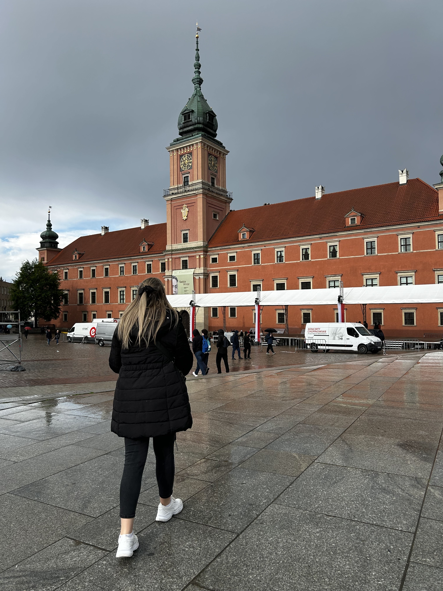

1. Cuéntame un poco sobre tu viaje ideal
Rellena el formulario con los detalles de ese viaje que tienes en mente: destino, fechas, presupuesto y tus preferencias. Cuanta más información me des, mejor podré diseñarlo a tu medida.
Hay viajes que se recuerdan por los lugares que visitas. Y otros, por cómo te hicieron sentir.
En La Bitácora de Sandra te ayudo a preparar ese viaje pensado para ti, a tu ritmo y según la forma en la que te gusta viajar. Sin prisas, sin planes imposibles y sin perder horas delante de una pantalla intentando organizarlo todo. Porque detrás de cada viaje hay una historia diferente: una escapada para desconectar, un sueño pendiente, una aventura improvisada o esas ganas de volver a sentir la emoción de descubrir un lugar nuevo. Déjame ayudarte a dar forma a ese viaje para que tú solo tengas que disfrutar de la experiencia. Elaboraré para ti un itinerario detallado y adaptado a tu estilo, con propuestas de vuelos, alojamientos, rincones especiales, restaurantes, actividades y consejos prácticos para que tengas todo organizado de manera sencilla y clara.


Mi historia
Soy Sandra, viajera incansable y creadora de experiencias a medida.
Tras más de 11 años trabajando en el sector turístico, ayudo a personas a descubrir el mundo de una forma auténtica, sencilla y sin estrés, diseñando viajes personalizados que se adaptan a su ritmo, sus gustos y su manera de vivir cada aventura.
Porque cada viaje debe sentirse único desde el primer instante.
Conoce más sobre miRellena el formulario con los detalles de ese viaje que tienes en mente: destino, fechas, presupuesto y tus preferencias. Cuanta más información me des, mejor podré diseñarlo a tu medida.
Me pondré en contacto contigo según prefieras (WhatsApp, email o Instagram) para agendar una videollamada de 30 minutos. Hablaremos sobre tu idea de viaje y te explicaré cómo puedo ayudarte, junto con las tarifas.
Una vez confirmado, empiezo a trabajar en tu itinerario. Diseño cada detalle pensando en ti, tu estilo de viaje y cómo aprovechar al máximo cada día.
Te enviaré un PDF con todo lo necesario: opciones de transporte, alojamientos, actividades, restaurantes, mapas, consejos prácticos y enlaces directos para que puedas reservar fácilmente.
No estarás sola/o. Durante tu viaje contarás con mi apoyo para resolver dudas o imprevistos, para que solo tengas que centrarte en disfrutar.